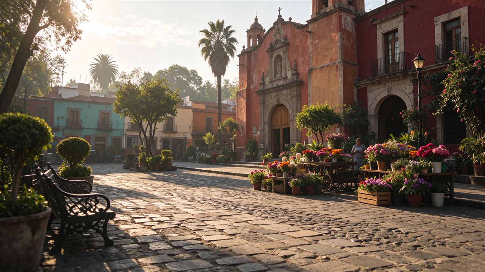
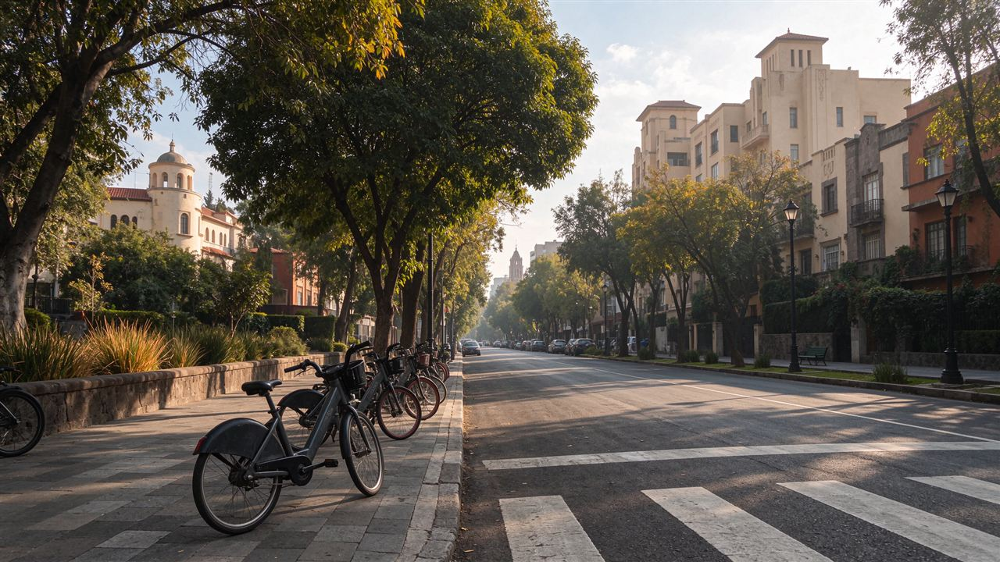
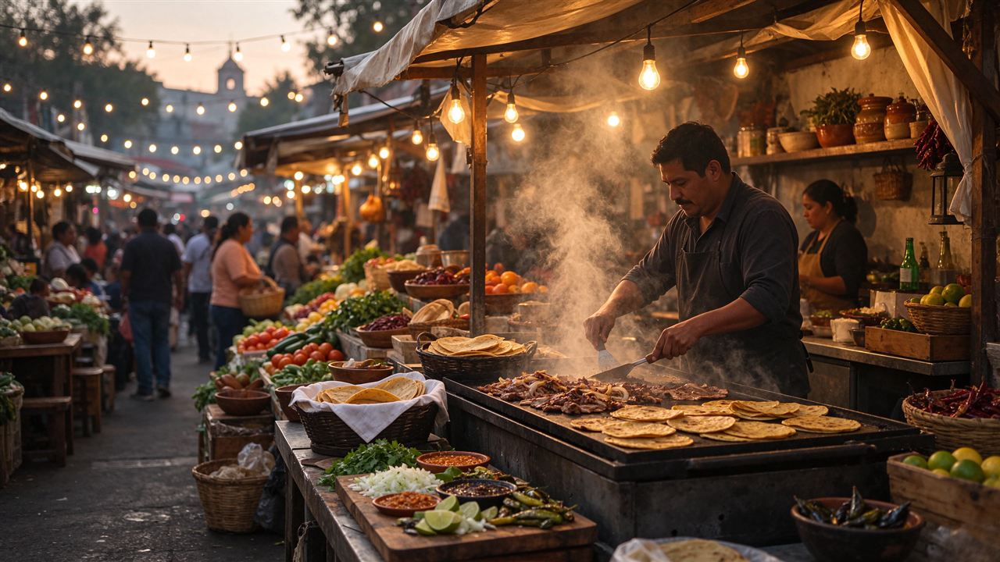
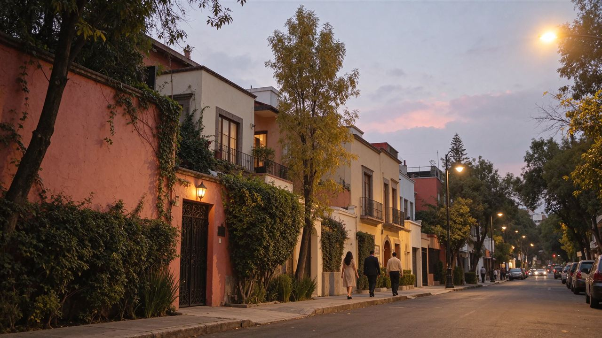

Welcome to Mexico City
Millions of visitors and newcomers settle into CDMX every year. This Companion distills what experienced residents wish they had known before landing — organized so you can act on it in order, without guesswork.
For short stays
Tourists, trial movers and digital nomads spending one to six months in the city.
For first impressions
Neighborhood fit, honest budgets and the everyday systems that make a big city feel manageable.
Zero jargon
Plain English, clear prices, and a phrasebook that gets you through real encounters on the street.
What you'll find inside
First 72 Hours
Day-by-day playbook for connectivity, cash, transport cards and home systems before your first week ends.
Neighborhood Matchmaker
Eight expat-relevant colonias compared by vibe, rent range, walkability and who each one suits.
Transport & money
Metro, Metrobús, bikes, ride apps, airport transfers, ATM rules, SIM and eSIM options.
Phrasebook with audio
Forty+ survival phrases in four audio packs — basics, transport, food and emergencies.
What you can expect
120-day access
Your guide stays open for 120 days from purchase; open it in your Whop member area. No files are emailed or shipped.
English / Chinese
Toggle the page language anytime; the guide and audio phrasebook are presented in both languages.
Instant digital delivery
A self-serve digital system with no shipping; access and technical issues are handled per Whop policy.
Your First 72 Hours
A simple sequence that covers the things people most often delay: being connected, having local cash, knowing how to move, and locating everyday services near where you stay.
Day 1 · Connectivity & cash
Buy a prepaid Telcel or AT&T SIM at any OXXO store — bring your passport, allow roughly 200–300 MXN for 20+ GB, activated in minutes. If your phone supports it, install an eSIM before landing to be online at the airport. Withdraw pesos from a bank-branch or mall ATM (BBVA, Banorte and similar), never a standalone corner machine. Always decline the machine's offer to convert to your home currency — that dynamic conversion typically costs 5–8%.
Day 2 · Movement
Buy the Tarjeta de Movilidad Integrada (MXN 15) at any metro station — one card works on Metro, Metrobús, Cablebús, trolleybuses and Ecobici. Install Uber, DiDi (often 10–20% cheaper) and Cabify, plus Rappi for delivery. Walk the perimeter of your colonia in daylight: you'll learn more in an hour than from any guide.
Day 3 · Home systems
Confirm your water-delivery rhythm with your host — most buildings have a regular garrafón truck, around 45–60 MXN per 20-liter jug. Locate your nearest mercado, a walk-in pharmacy clinic (Farmacias del Ahorro or Guadalajara, consultorio around 50–100 MXN) and a laundry (roughly 20–30 MXN per kilo — many rentals have no washer, and that's normal here).
Neighborhood Matchmaker
The city is a collection of walkable islands; where you base yourself shapes daily life more than almost any other choice. Rent figures are approximate furnished one-bedroom ranges in USD per month, 2026 samples.
Roma Norte
The default landing zone for a reason: art-deco streets, an extraordinary density of cafés, coworking and restaurants, and the largest concentration of other internationals.
- Best for: first-timers, walkability, remote work
- Caution: pricey and increasingly tourist-heavy
Condesa
Wrapped around Parque México and Parque España, slightly greener and calmer than Roma, with strong café culture and a dog-friendly, design-media crowd.
- Best for: parks, a quieter base near the action
- Caution: rents match Roma; busy evenings on weekends
Polanco
The affluent quarter: embassies, luxury retail on Masaryk, fine dining, polished streets and Chapultepec Park next door. The safest-feeling option for families and executives.
- Best for: safety, services, families, corporate stays
- Caution: very expensive; quieter nightlife
Juárez / Cuauhtémoc
Between Roma and the historic center, beside Paseo de la Reforma, revitalizing fast and a notch cheaper, with good metro access and a lively bar-restaurant scene.
- Best for: central location, value near Roma
- Caution: quality varies block by block — inspect street level
Coyoacán
Bohemian heart of the south: cobblestone plazas, colorful markets, Frida Kahlo's legacy and a distinctly Mexican, less gentrified atmosphere. Rents are lower and food markets are spectacular.
- Best for: culture, slower life, longer-stay families
- Caution: longer commute north; fewer coworking spots
Del Valle
Middle-class residential Benito Juárez borough: leafy streets, everyday services, quiet evenings and a reputation for feeling safe. Fewer foreigners, less international flavor.
- Best for: quiet local life, space for the money
- Caution: limited expat amenities and nightlife
Narvarte
The neighborhood locals recommend when asked for "something other than Polanco, Condesa and Roma." Famous taquerías, strong metro and Metrobús links to Roma and downtown, cheaper restaurants.
- Best for: value, authentic daily life, food
- Caution: less polished; more Spanish on the street
Roma Sur
Less crowded than Roma Norte, more residential, with the same easy access and a local texture. A sensible value choice for stays of a month or more.
- Best for: budget-conscious longer leases
- Caution: street-level caution applies like anywhere busy

Getting Around
You do not need a car in central CDMX. Traffic is punishing; the metro and ride apps cover almost every journey an arrival will make.
Metro
MXN 5 per ride, fast and extensive with free transfers between lines. Avoid valuables at rush hour; some cars are reserved for women and children.
Metrobús
MXN 6 per ride, buses in dedicated lanes along the major avenues. Line 4 runs to the airport terminals.
Ecobici
City bike-share — the quickest way around flat Roma, Condesa, Juárez and Polanco. One-day pass around MXN 134; annual pass around MXN 588.
Ride apps
Uber, DiDi and Cabify are the normal way home at night. Short trips are cheap by US standards; DiDi is often 10–20% below Uber.
Airport arrivals
| Route | Options | Approximate cost |
|---|---|---|
| MEX airport → Roma / Condesa | Uber / DiDi, or an authorized yellow taxi from the official taxi booth | MXN 250–400 |
| NLU (Felipe Ángeles) → central CDMX | Significantly farther; taxi/ride app or the Mexicobus shuttle | MXN 600–900 by road |

Money & Connectivity
Cards work across most shops and ride apps, but local cash remains essential at markets, street stalls and smaller fondas.
Cash & ATMs
- Withdraw at bank-branch or mall ATMs
- Decline currency-conversion offers at the machine
- Carry small bills for markets and tips
SIM & eSIM
- Prepaid Telcel / AT&T at OXXO, passport required
- 20+ GB plans roughly 200–300 MXN
- eSIM can be installed before you land
Useful apps
- Uber · DiDi · Cabify — rides
- Rappi — delivery and errands
- Google Maps — metro and walking routes
Exchange rate note
In November 2026 one US dollar bought roughly 18.5 pesos. Rates move monthly — check the day you budget, and avoid changing money at airport counters.
Food & Daily Life
CDMX is one of the world's great food cities at every price point. Here are the everyday systems newcomers ask about first.

Street food
Tacos and antojitos from $2–4; follow stalls with long local lines and steam that stays fresh.
Comida corrida
A fixed-price multi-course lunch at family fondas, around $5 — one of the great dining bargains anywhere.
Casual & mid-range
A casual meal around $8; a mid-range restaurant closer to $40; coffee ~$3, beer ~$2.50.
Everyday services
| Need | How it works |
|---|---|
| Drinking water | Do not drink tap water. Bottled water or the 20-liter garrafón jug delivered to your building; ~45–60 MXN per jug. |
| Pharmacy clinic | Farmacias del Ahorro / Guadalajara / Similares offer walk-in general consultations, roughly 30–100 MXN, medication from the attached pharmacy. |
| Laundry | Wash-and-fold by the kilo, ~20–30 MXN/kg. Many rentals have no washing machine. |
| Groceries | Local mercados for produce; supermarkets (Superama, Wal-Mart, Chedraui) and delivery apps for the rest. |
Seasons & weather
Dry season · Nov–Apr
Brilliant blue mornings, cool evenings, the best time for outdoor life.
Rain season · May–Oct
Reliable afternoon downpours, usually 4–7 pm; carry a light rain jacket.
Air quality · Feb–May
The smoggiest stretch; worst on calm days. June–January tends to be cleaner.
Safety & Health
Hold two truths at once: the neighborhoods where visitors live are genuinely busy and safe by day, and the city rewards specific, simple caution.

Everyday rules
- Ride apps at night; never street-hail taxis
- ATMs inside banks or malls only
- Phone away from tables and back pockets
- Stick to busy, lit streets after dark
- Women should take women-only metro cars at night when possible
Emergency numbers
- 911 — police, ambulance, fire (national emergency)
- Locales are staffed in Spanish; keep your hotel address saved offline
- Embassy/consulate contact details belong in your offline document folder
Healthcare setup
Walk-in care
Pharmacy consultorios handle minor issues without an appointment. For anything more serious, the city's private hospitals are widely used by expats.
Hospitals to know
Hospital ABC (Observatorio / Santa Fe), Hospital Ángeles (multiple locations), Médica Sur (Tlalpan). Compare international travel or health insurance before you arrive.
Spanish Survival Phrasebook
Four audio packs cover the situations you'll actually meet. Listen on the way to the airport; the table below follows each pack phrase by phrase.
| Spanish | English |
|---|---|
| Hola | Hello |
| Buenos días | Good morning |
| Buenas tardes | Good afternoon |
| ¿Cómo está? | How are you? |
| Mucho gusto | Nice to meet you |
| Me llamo… | My name is… |
| Por favor | Please |
| Gracias | Thank you |
| De nada | You're welcome |
| Disculpe | Excuse me / sorry |
| ¿Habla inglés? | Do you speak English? |
| No entiendo | I don't understand |
| ¿Puede repetir, por favor? | Can you repeat that, please? |
| Spanish | English |
|---|---|
| ¿Dónde está…? | Where is…? |
| ¿Me lleva a esta dirección? | Can you take me to this address? |
| ¿A cuánto está…? | How far is…? |
| ¿Dónde puedo tomar un Uber? | Where can I get an Uber? |
| ¿Cuánto cuesta el boleto? | How much is the ticket? |
| La estación más cercana | The nearest station |
| Derecho / A la izquierda / A la derecha | Straight / Left / Right |
| Perdón, ¿dónde queda el Metrobús? | Excuse me, where is the Metrobús? |
| Spanish | English |
|---|---|
| Una mesa para dos, por favor | A table for two, please |
| La carta, por favor | The menu, please |
| ¿Qué me recomienda? | What do you recommend? |
| Soy alérgico a… | I'm allergic to… |
| Sin picante, por favor | Not spicy, please |
| Una cerveza / un agua, por favor | A beer / a water, please |
| ¿Qué es esto? | What is this? |
| La cuenta, por favor | The bill, please |
| ¡Buen provecho! | Enjoy your meal! |
| Spanish | English |
|---|---|
| ¡Ayuda! | Help! |
| Llame al 911 | Call 911 |
| Estoy perdido | I'm lost |
| Necesito un médico | I need a doctor |
| ¿Dónde está el hospital más cercano? | Where is the nearest hospital? |
| Me robaron la cartera | My wallet was stolen |
| ¿Puede llamar a mi hotel? | Can you call my hotel? |
| Estoy bien, gracias | I'm fine, thank you |
| ¿Dónde hay una farmacia? | Where is there a pharmacy? |
Monthly Budget Planner
Enter your expected monthly costs in USD. The planner totals them and compares against three resident benchmarks for central CDMX, 2026.
| Benchmark | Monthly total (solo, central CDMX) | Style |
|---|---|---|
| Lean | ~$1,400 | Value neighborhoods, home cooking, public transit |
| Comfortable | ~$2,200 | Roma/Condesa-level rent, regular eating out, rides at night |
| Indulgent | $4,500+ | Polanco-level housing, fine dining, premium services |
Arrival Checklist
Tick items as you complete them. Progress saves automatically in this browser; use the print button to keep a paper copy in your documents folder.